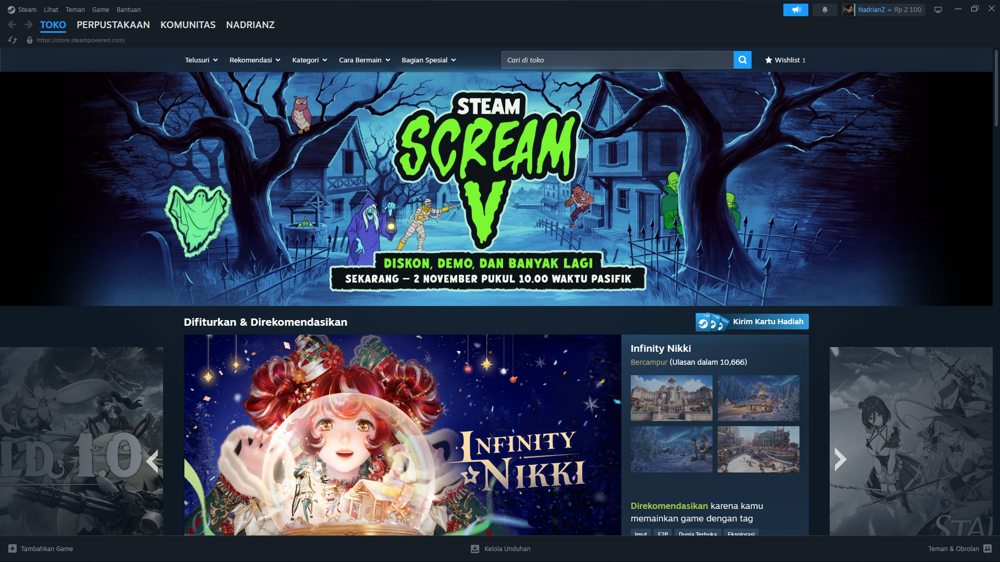

Dikutip dari Usability.gov, usability (kebisaan/keberdayagunaan) mengacu pada pengukuran seberapa mudah seorang pengguna dapat mencapai tujuan mereka saat menggunakan suatu layanan atau produk. Pengukuran ini umumnya dilakukan melalui metodologi riset terstruktur (seperti usability testing) yang menilai tingkat keberhasilan (success rate) dan kepuasan pelanggan (customer satisfaction). Usability merupakan bagian dari cakupan User Experience (UX) yang lebih luas, di mana fokus utamanya berpusat pada mekanisme teknis dan kemudahan agar produk dapat berfungsi seoptimal mungkin bagi penggunanya.
Aplikasi yang dipilih untuk dianalisis adalah Steam yang dikembangkan oleh Valve Corporation. Steam merupakan platform distribusi digital game komputer terbesar di dunia yang menyediakan layanan digital rights management (DRM), penyediaan jaringan (matchmaking), social networking, hingga video streaming. Platform ini memungkinkan pengguna untuk membeli, mengunduh, menginstal, serta memperbarui game secara otomatis, sekaligus berinteraksi dengan komunitas pemain lainnya di seluruh dunia.
Efektivitas: Sangat tinggi. Steam berhasil menjalankan fungsi utamanya untuk pembelian game, otomatisasi pembaruan (update), peluncuran game, serta komunikasi antar pemain tanpa hambatan teknis yang berarti.
Efisiensi: Cukup tinggi. Pengguna dapat membeli dan langsung mengunduh game hanya dalam beberapa klik. Keberadaan fitur Big Picture Mode dan Steam Library yang terstruktur mempercepat akses pengguna ke koleksi game mereka.
Kepuasan: Secara keseluruhan tinggi, terutama berkat integrasi fitur sosial (obrolan, cloud save, achievement, dan review pengguna). Namun, kepuasan bisa menurun saat pengguna menghadapi tampilan antarmuka yang terlalu padat.
▪ Apakah Aplikasi mudah digunakan? Ya, untuk fungsi-fungsi utama seperti membeli dan memainkan game, Steam sangat intuitif bagi pengguna awam maupun profesional.
▪ Apakah navigasi jelas? Cukup jelas. Menu utama (Store, Library, Community, Profile) diletakkan di bagian atas secara konsisten, meskipun sub-menu di dalamnya sangat banyak dan terkadang membuat bingung.
▪ Apakah user flow sederhana? User flow untuk pencarian game hingga pembayaran tergolong singkat dan efisien. Namun, user flow untuk pengaturan akun atau pengaturan privasi terasa berbelit-belit.
▪ Apakah user merasa nyaman? Ya, pengguna umumnya merasa nyaman karena kestabilan sistem dan fitur penyinkronan cloud yang memudahkan akses dari perangkat mana pun.
▪ Apa kekurangan aplikasi? Tampilan antarmuka (UI) terasa sesak dengan banyaknya informasi/banner promosi, serta beberapa menu lama (legacy UI) yang belum diperbarui sehingga terasa tidak konsisten.
▪ Apa saran perbaikannya? Penyederhanaan tata letak (layout) pada halaman toko (Store) serta penyatuan desain visual antara menu lama dan menu baru agar lebih modern dan konsisten.
Solusi usability:
Steam dari Valve merupakan platform distribusi game yang sangat solid dari segi efektivitas dan efisiensi fungsi. Fitur utamanya dalam mengelola dan memainkan game berjalan dengan sangat baik. Meskipun demikian, dari sisi usability, Steam masih perlu melakukan penyederhanaan tata letak antarmuka dan konsistensi navigasi agar tidak membingungkan pengguna serta memberikan pengalaman yang lebih bersih dan responsif.
